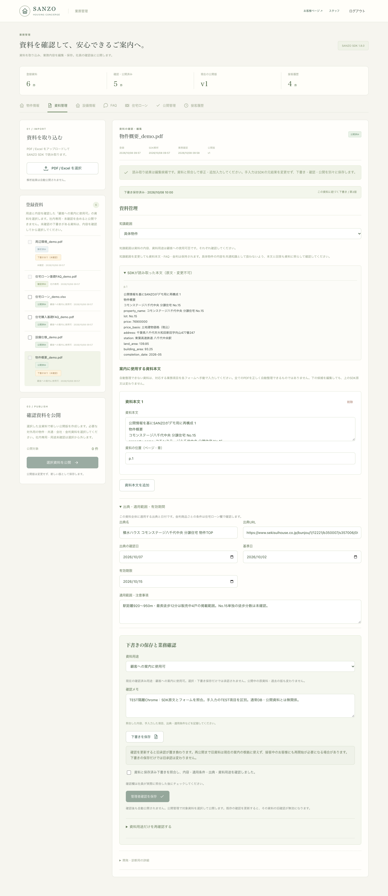
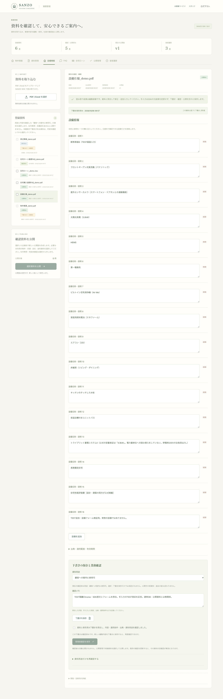
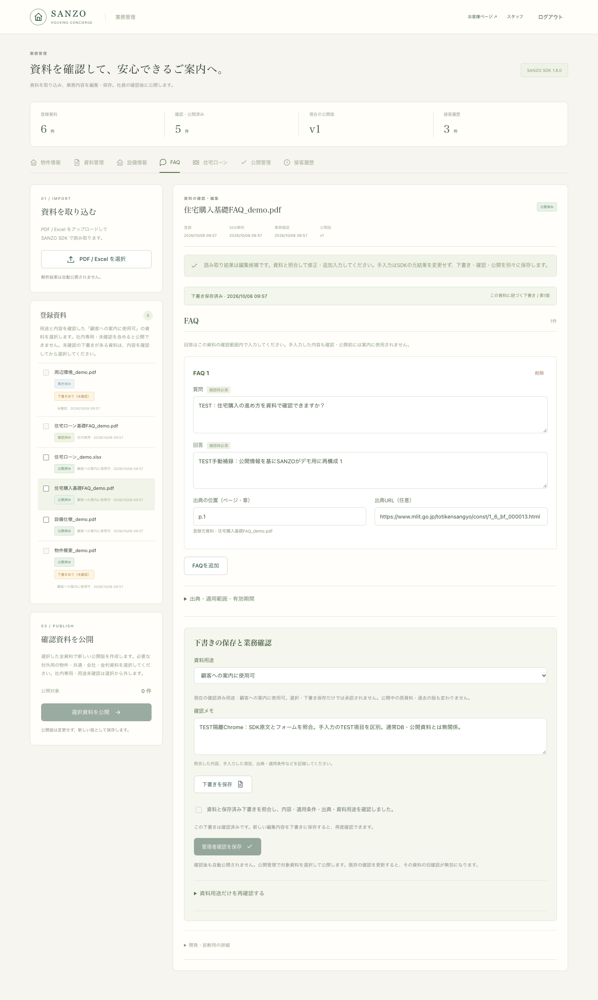
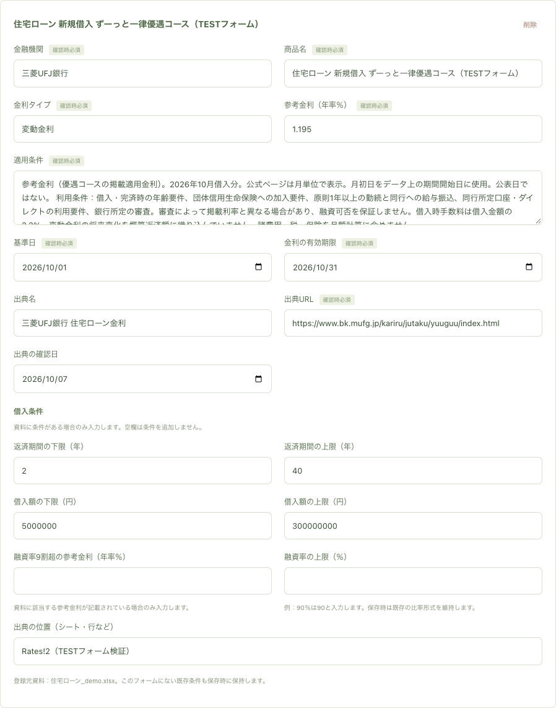
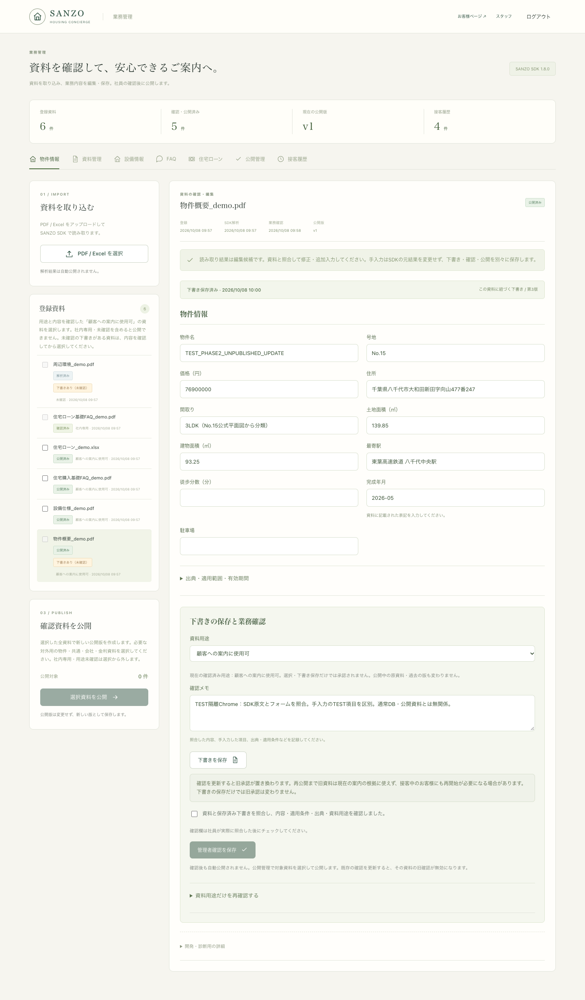
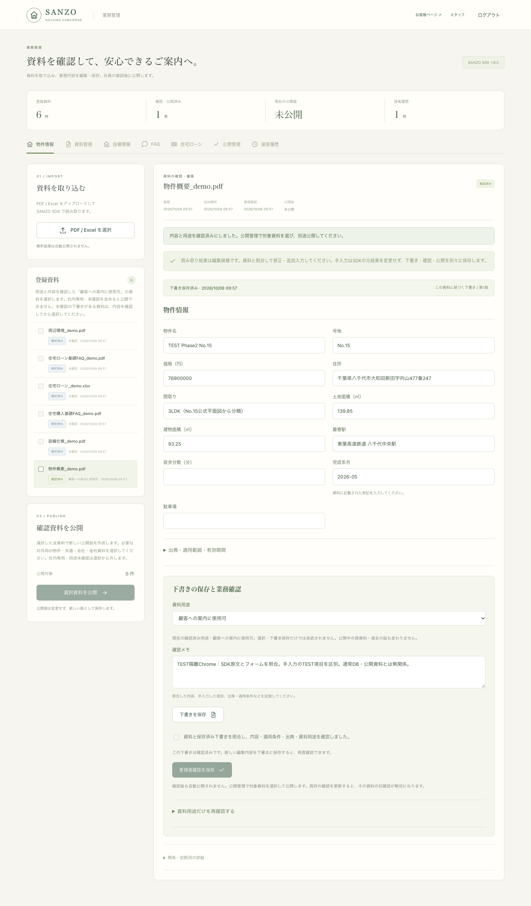
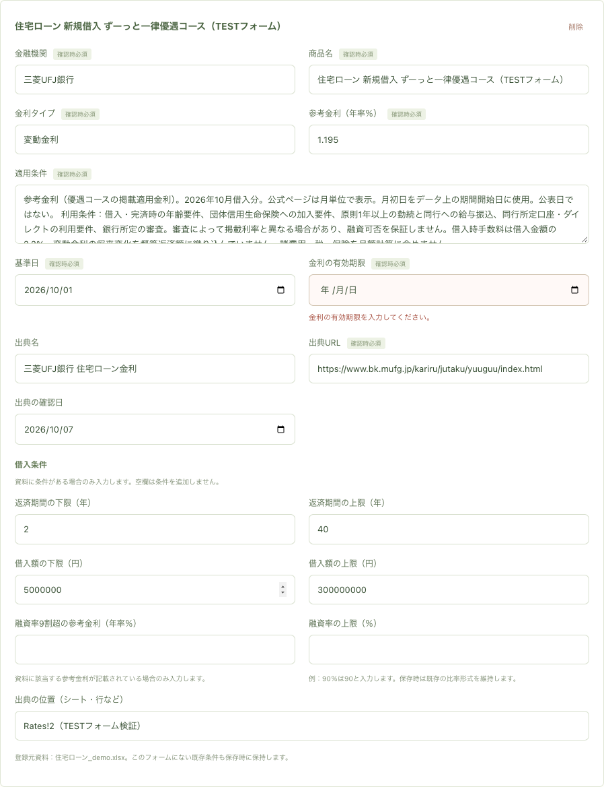

検証結果JSON · 验收记录 · 初回记录 · 选择器修正前记录
六份真实解析的TEST资料。用途、状态、未确认下书状态可见。

普通物件表单；画面显示的是未公开的TEST编辑候选。
名称与说明按项编辑，支持追加、修改与删除。

问题、回答、资料位置和来源URL；手动整理与SDK原结果分开。

实际原资料的金利与条件。TEST只修改显示名称和资料位置，金融条件保持原值。

刷新Chrome并重新登录后，由Backend恢复同一资料的草稿；确认框保持未勾选。

实际点击确认后的状态；确认与公开仍然分开。

缺少金利有效期限时，确认失败，并在对应日期字段显示日语说明。
